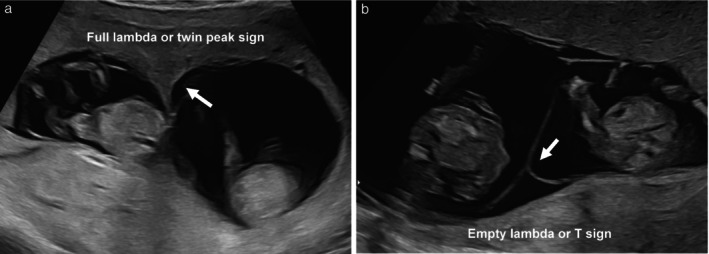
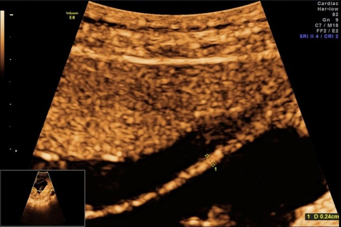
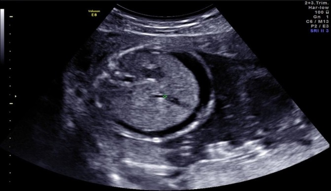

1988 — Chọc ối & sinh thiết gai nhau ở song thai: hai buồng ối, hai bộ gen / Amniocentesis and chorionic villus sampling in twin pregnancy
Tags: pattern:ket-qua-khong-tuong-hop pattern:lay-nham-buong-oi pattern:bien-chung-thu-thuat vung:thai vung:buong-oi vung:manh-oi protocol:choc-oi protocol:CVS
Mức chắc chắn (certainty): tổng hợp y văn (literature synthesis) — số liệu từ đoàn hệ đa trung tâm gần 10.000 thai trong song thai có nhóm chứng (PMC9828484), nghiên cứu bệnh–chứng 220 ca chọc ối song thai hai bánh nhau (PMC12137027), hướng dẫn thực hành ISUOG 2025 (PMC11788470), tổng quan chẩn đoán xâm lấn ở song thai (PMC4449657) và một ca nguyên văn song thai lệch Hb Bart's (PMC6202988). Đây là tổng hợp y văn: các con số mất thai dao động rất rộng giữa các loạt, phải nói với gia đình theo khoảng, không theo một con số tuyệt đối.
Câu chốt: trong song thai, câu hỏi không phải "chọc ối hay CVS" mà là "lấy được mẫu của CẢ HAI thai, và biết chắc mẫu nào của thai nào". Một lần chọc vào nhầm túi hoặc hai lần chọc vào cùng một túi cho ra hai kết quả giống nhau — và đó là con đường dẫn tới đình chỉ nhầm thai lành. Ba con số để tư vấn: mất thai sau chọc ối song thai gộp 3,07% và sau CVS 3,84% (so với 0,11–0,13% ở thai đơn); trong đoàn hệ có nhóm chứng, chết thai < 24 tuần tăng có ý nghĩa nhưng mất thai bình thường về di truyền–hình thái thì tương đương nhóm không can thiệp; và 4% song thai có dị tật ở một thai (3,4% hai bánh nhau, 6% một bánh nhau) — chính nhóm này cần kết quả đúng thai.
1. Tổng quan bệnh học – cơ chế hình ảnh (TẠI SAO)
1.1 Vì sao song thai là một bài toán khác, không phải "chọc ối hai lần"
- Hai bộ gen, không phải một. Đa số song thai hai bánh nhau (dichorionic diamniotic, DCDA) là khác hợp tử (dizygotic) — khoảng 10% DCDA lại là cùng hợp tử, nên không thể suy "cùng giới → cùng kiểu gen". Một thai có thể 47,+21, thai kia 46,XX bình thường: kết quả của thai này không nói gì về thai kia.
- Hai túi ối, một màng ngăn. Màng ối giữa hai thai là cấu trúc mỏng, di động, có thể gấp nếp, chồng lên nhau hoặc áp sát thành tử cung; trên siêu âm 2D màng là đường tăng hồi âm mảnh, và đầu kim 20 G (0,9 mm) dày hơn màng rất nhiều. Vì vậy "nhìn thấy màng" không bảo đảm kim đã sang túi thứ hai — phải có bằng chứng khách quan (thuốc nhuộm, hai lần vào tử cung riêng, hoặc hình ảnh lưu).
- Nền sảy thai của song thai vốn đã cao hơn thai đơn. Trong đoàn hệ có nhóm chứng, chết thai < 24 tuần ở nhóm không can thiệp là 1,2% (chọc ối DCDA) và 1,8% (chọc ối một bánh nhau); ở nhóm CVS là 1,5% và 2,0% (PMC9828484). Không trừ nền này thì mọi ca mất thai đều bị quy oan cho thủ thuật.
- Một bánh nhau (monochorionic) là bệnh cảnh riêng. Hai thai dùng chung một bánh nhau → CVS chỉ lấy được một mẫu bánh nhau, nên bỏ sót thể lệch bộ nhiễm sắc thể hiếm gặp giữa hai thai; đồng thời mọi can thiệp vào một túi ảnh hưởng huyết động học của cả hai qua các miệng nối (bài 1637).
1.2 Vì sao kết quả sai lại thành thảm họa — cơ chế của "lấy nhầm túi"
- Sinh học: hai túi ối chứa hai quần thể tế bào thai khác nhau. Nếu hai lần chọc cùng vào một túi, phòng xét nghiệm nhận hai mẫu của cùng một thai → hai karyotype/CMA giống hệt nhau. Nếu thai đó bình thường, thai bất thường còn lại không bao giờ được phát hiện; nếu thai đó bất thường, cả hai kết quả đều bất thường và gia đình có thể đình chỉ cả thai kỳ hoặc đình chỉ sai thai.
- Vật lý – vì sao khó phát hiện: màng ngăn DCDA dày > 2 mm (dấu lambda / twin peak), màng một bánh nhau < 2 mm (dấu T); khi màng gấp nếp hoặc hai màng chồng nhau, mặt cắt ngang có thể cho hai đường song song giả tạo, và đầu kim tạo bóng lưng (posterior acoustic shadowing) che mất màng ngay sau đầu kim. Tỷ lệ thủng màng do thủ thuật (iatrogenic septostomy) được báo cáo tới ~30% khi màng gấp/chồng (PMC4449657).
- Hệ quả muộn: thủng màng → một buồng ối (iatrogenic monoamnionicity) → dây rốn quấn nhau, nguy cơ thai lưu đột ngột. Vì vậy ISUOG khuyến cáo khi cần lấy hai túi thì dùng hai lần chọc riêng (two-puncture technique) để tránh biến chứng này (PMC11788470).
1.3 Ngưỡng định lượng — bảng số phải thuộc
| Nhóm | Can thiệp | Chết thai < 24 tuần | So nhóm chứng | Nguồn |
|---|---|---|---|---|
| DCDA | CVS (n = 258) | 8,1% (21/258) | chứng 1,5%; RR 5,54 (3,38–9,08) | PMC9828484 |
| DCDA | chọc ối (n = 406) | 2,7% (11/406) | chứng 1,2%; RR 1,85 (0,97–3,52) | PMC9828484 |
| MCDA | CVS (n = 98) | 10,2% (10/98) | chứng 2,0%; RR 5,14 (2,51–10,54) | PMC9828484 |
| MCDA | chọc ối (n = 160) | 12,5% (20/160) | chứng 1,8%; RR 6,39 (3,57–11,43) | PMC9828484 |
| DCDA | chọc ối, ca–chứng 2025 (n = 220) | 0,9% mất 1 thai, 0,5% mất cả hai | chứng 1,1% / 0,5% (p = 0,982) | PMC12137027 |
| Gộp | chọc ối song thai | 3,07% (mất thai), 2,54% (< 24 tuần) | ca–chứng 2,59% vs 1,53%, RR 1,81 | PMC11788470 |
| Gộp | CVS song thai | 3,84% | không khác TA/TC, 1 kim/2 kim, 1 lần/2 lần vào | PMC11788470 |
- Mất thai bình thường về di truyền và hình thái — con số quan trọng nhất khi tư vấn — tương đương nhóm chứng: DCDA chọc ối 1,3% vs 1,2% (RR 1,16), MCDA chọc ối 3,4% vs 1,8% (RR 1,93, KTC rộng) (PMC9828484).
- Càng về tam cá nguyệt II, đình chỉ càng nặng nề — đây là lý do ISUOG ưu tiên CVS ở song thai hai bánh nhau: chẩn đoán sớm cho phép đình chỉ chọn lọc ở tam cá nguyệt I (PMC11788470).
2. Mẫu hình + chẩn đoán phân biệt theo vị trí (gamut)
Mẫu hình cần nhận diện: "hai kết quả không tương hợp" — một bất thường, một bình thường, hoặc hai kết quả giống hệt nhau đến mức đáng ngờ.
- Theo loại bánh nhau (quyết định đường vào trước tiên):
- DCDA (màng > 2 mm, lambda sign): hai bánh nhau, hai túi → CVS hai bánh (tốt nhất) hoặc chọc ối hai túi; mỗi thai một mẫu.
- MCDA (màng < 2 mm, T sign): một bánh nhau, hai túi → CVS chỉ một mẫu bánh (bỏ sót lệch hiếm); nếu có dị tật lệch thì chọc ối cả hai túi là lựa chọn được khuyến cáo (PMC11788470).
- MCMA (một túi ối): chỉ một mẫu — không có khái niệm "lấy nhầm túi", nhưng không bao giờ chọc hai lần.
- Theo kiểu kết quả (gamut định hướng xử trí):
- Lệch thật (true discordance): hai hợp tử khác nhau, hoặc cùng hợp tử nhưng đột biến sau hợp tử — hay gặp nhất ở DCDA.
- Lấy nhầm cùng một túi: hai kết quả giống hệt; gợi ý khi giới tính trên siêu âm khác với karyotype, hoặc khi một thai có dị tật/hydrops rõ mà kết quả lại bình thường.
- Nhiễm bẩn tế bào mẹ (maternal cell contamination, MCC) hoặc lẫn mẫu giữa hai thai khi CVS (cross-contamination ~1%) → kết quả khảm, không khớp giữa hai phương pháp.
- Thai "biến mất" (vanishing twin): mẫu bánh nhau có thể phản ánh thai đã chết, không phải thai đang sống.
- Gợi nhớ 4 bước: Chorionicity → Map (vị trí trái/phải) → Two samples (hai mẫu riêng) → Verify (đối chiếu siêu âm + STR/CMA).
3. Bảng so sánh phân biệt (ma trận đối chiếu)
| Thực thể (entity) | Hình ảnh / dữ liệu điển hình | Chốt vào (rule-in) | Chốt loại (rule-out) | Gợi ý xác nhận |
|---|---|---|---|---|
| Lệch thật hai hợp tử | Hai thai khác giới hoặc cùng giới; màng > 2 mm; một thai có dị tật/hydrops | Hai kiểu gen khác nhau trên STR/CMA + khớp giới tính siêu âm | Hai mẫu giống hệt nhau ở thai khác giới → không phải lệch thật | STR 15–20 locus, CMA; lưu ảnh vị trí từng thai |
| Lấy nhầm một túi (wrong-sac) | Hai lần chọc một lần vào tử cung, không thuốc nhuộm, màng gấp | Karyotype/CMA hai mẫu trùng khít + giới tính siêu âm không khớp một thai | Có thuốc nhuộm ở túi 1 và hai lần vào tử cung riêng → loại trừ | Chọc lại túi nghi ngờ, bơm indigo carmine 5 mL, siêu âm đánh dấu trái/phải |
| Nhiễm bẩn tế bào mẹ (MCC) | Karyotype 46,XX "bình thường" ở thai có dị tật; khảm thấp | Tỷ lệ tế bào mẹ đáng kể trên STR; kết quả không lặp lại | STR hoàn toàn của thai; hai mẫu độc lập cùng kết luận | STR/SNP array; nuôi cấy hai môi trường; lấy lại mẫu |
| Lẫn mẫu CVS hai thai | CVS hai bánh một lần; kết quả khảm hoặc hai mẫu giống nhau | ~1% ca CVS song thai; mẫu gần màng ngăn | Lấy gần chỗ chèn dây rốn, xa màng; hai lần chọc riêng | STR; mô bệnh bánh nhau sau sinh; lấy lại |
| Vanishing twin | Một túi trống/không tim thai; bánh nhau còn lại | Kết quả không khớp thai đang sống; siêu âm sớm có hai thai | Thai còn lại phát triển bình thường + hai mẫu khớp | Siêu âm chuỗi; STR mẫu bánh; tư vấn nguy cơ thai còn lại |
- Ảnh minh họa màng ngăn (DCDA vs MCDA) — dấu lambda đầy đủ so với dấu T rỗng, yếu tố quyết định đầu tiên của mọi kỹ thuật:

Nguồn: ISUOG Practice Guidelines 2025 — PMC11788470 — Figure 4 — CC BY 4.0 (ảnh nguyên bản, không crop).
4. Protocol chụp/thủ thuật + hệ phân độ
4.1 Trước thủ thuật — ba việc không được bỏ
- Xác định bánh nhau/ối ở 11–14 tuần và lưu ảnh màng ngăn vào hồ sơ (khuyến cáo ISUOG); đo độ dày màng: > 2 mm nghi DCDA, < 2 mm nghi MCDA. Ảnh lambda/T sign là bằng chứng pháp lý cho kỹ thuật đã chọn.
- Đánh dấu thai theo phía mẹ (trái/phải, trên/dưới) và ghi vào phiếu; cùng một người siêu âm – người chọc – người đọc kết quả nên dùng cùng hệ quy chiếu.
- Tư vấn theo bánh nhau, không theo "song thai" chung: DCDA có nền sảy thai thấp hơn MCDA; nguy cơ can thiệp cũng khác (bảng 1.3).
4.2 Kỹ thuật
- Chọc ối: kim 20 G, bỏ 2 mL dịch đầu (giảm nhiễm tế bào mẹ), hút ~20 mL/túi, mỗi túi một lần vào tử cung riêng. Trong loạt 220 ca DCDA: 80,3% lấy được cả hai túi; 87,7% dùng hai lần chọc riêng (PMC12137027, PMC9828484).
- Thuốc nhuộm: bơm 5 mL indigo carmine vào túi thứ nhất để chứng minh túi thứ hai là túi khác — dùng ở 7% ca (16/220) trong loạt trên; hữu ích khi màng gấp/chồng hoặc dịch ối ít một bên.
- CVS: 17–21 G, lấy gần chỗ chèn dây rốn, tránh vùng quanh màng ngăn (kết quả không đáng tin 3–4% nếu lấy sát màng); hai bánh → hai lần chọc; một bánh → một mẫu ở amniotic equator là lựa chọn hợp lý (PMC11788470).
- Sau thủ thuật: đánh giá tim thai ngay, nghỉ 30 phút, hỏi đau bụng – ra máu – rỉ ối; anti-D nếu mẹ Rh âm (bài 1954).
4.3 Ra quyết định sau kết quả (flowchart)
flowchart TD
A[Song thai, có chỉ định chẩn đoán di truyền] --> B{Xác định bánh nhau 11-14 tuần}
B -->|DCDA, màng > 2 mm| C[CVS hai bánh, hai lần chọc]
B -->|MCDA, màng < 2 mm| D{Dị tật lệch trên siêu âm?}
D -->|Không| E[CVS một mẫu bánh]
D -->|Có| F[Chọc ối cả hai túi]
C --> G{Kết quả}
E --> G
F --> G
G -->|Hai thai bình thường| H[Theo dõi thai kỳ]
G -->|Một thai bất thường| I{Loại bánh nhau}
I -->|DCDA| J[Đình chỉ chọn lọc: KCl, ưu tiên tam cá nguyệt I]
I -->|MCDA| K[Thắt/kẹp dây rốn từ 16 tuần; sống > 80%]
G -->|Hai kết quả giống hệt, nghi lấy nhầm túi| L[STR/CMA + chọc lại túi nghi ngờ]
- Đình chỉ chọn lọc: DCDA thường dùng KCl vào tim thai bệnh; MCDA không dùng KCl (thuốc qua miệng nối sang thai lành) mà thắt/kẹp dây rốn, làm từ 16 tuần, sống > 80% cho thai lành (PMC11788470).
- Không có hệ điểm chuẩn hóa cho "chất lượng lấy mẫu"; tiêu chuẩn thực hành là hai mẫu độc lập + bằng chứng vị trí.
5. Biến thể bình thường và cạm bẫy
- Màng ngăn gấp nếp/chồng nhau: dễ tạo ảo giác hai túi hoặc chọc xuyên màng; nếu dịch ối một bên ít, màng áp sát thai — dùng indigo carmine và hai lần vào tử cung thay vì cố "luồn kim qua màng".

Màng ngăn đo 0,24 cm trên siêu âm (dấu lambda) trong ca song thai hai bánh nhau. Nguồn: BMJ Case Reports 2018 — PMC6202988 — Figure 1 — CC BY-NC 4.0 (nguyên bản, không crop).
- Thủng màng do thủ thuật: có thể không thấy ngay; hậu quả là một buồng ối với dây rốn quấn — cảnh báo gia đình và theo dõi sát nếu nghi.
- Một bánh nhau: "một mẫu là đủ" chỉ khi đã xác định monochorionicity trước 14 tuần và hai thai tương đồng về tăng trưởng – hình thái; nếu lệch → phải lấy cả hai túi (PMC11788470).
- Kết quả bình thường của một thai không trấn an thai kia — đặc biệt khi thai còn lại có hydrops, dị tật hoặc tăng khoảng sáng sau gáy; sai lầm hay gặp là dừng lại ở kết quả đầu tiên bình thường.
- CVS ở bánh nhau một bánh không phát hiện lệch bộ nhiễm sắc thể hiếm giữa hai thai cùng hợp tử — đã báo cáo với trisomy 13, 18, 21, Turner và thể tam bội.
- Nền sảy thai: ở song thai, mất thai < 24 tuần 1,2–2,0% xảy ra dù không can thiệp; quy mọi mất thai sau chọc cho thủ thuật là sai logic, nhưng cũng không được nói "không tăng nguy cơ" — số liệu đoàn hệ có nhóm chứng cho thấy tăng (bảng 1.3).
6. Tự lượng giá — Blind Quiz
Ca 1 — Song thai 13 tuần, siêu âm kiểm tra bánh nhau
- Gợi ý lâm sàng: thai 13 tuần, hai thai, cần quyết định có làm CVS hay không.
- Câu hỏi: (a) Hình (a) và (b) khác nhau ở đâu? (b) Bánh nhau nào? (c) Điều đó đổi kế hoạch lấy mẫu thế nào?
Bấm để hiện đáp án (findings + chẩn đoán)
- Findings: (a) màng ngăn dày, có "vai" mô bánh nhau chen vào — dấu lambda/twin peak đầy đủ → hai bánh nhau (DCDA); (b) màng mảnh, cắm vuông góc vào thành tử cung — dấu T → một bánh nhau (MCDA).
- Chẩn đoán: (a) DCDA; (b) MCDA.
- Vì sao quan trọng: DCDA → CVS hai bánh, hai lần chọc hoặc chọc ối hai túi; MCDA → một mẫu bánh nếu hai thai tương đồng, hai túi nếu có dị tật lệch.
- Nguồn ảnh: ISUOG 2025 — PMC11788470 — Figure 4 — CC BY 4.0.
Ca 2 — Song thai 17 tuần, một thai có dịch bụng

- Gợi ý lâm sàng: song thai hai bánh nhau, bố mẹ cùng mang α-thalassemia-1; thai bên trái có dịch bụng, thai bên phải bình thường.
- Câu hỏi: (a) Mô tả dấu hiệu. (b) Vì sao phải lấy mẫu cả hai túi? (c) Nếu kết quả lệch, lựa chọn nào và làm từ lúc nào?
Bấm để hiện đáp án (findings + chẩn đoán)
- Findings: khoang dịch giảm âm bao quanh gan – ruột của một thai (ascites), thai còn lại không có; trước đó hình ảnh màng ngăn dày > 2 mm (lambda sign) xác nhận DCDA.
- Chẩn đoán: phù thai do Hb Bart's (--SEA/--SEA) ở một thai, thai kia thể mang α-thalassemia-1 (--SEA/αα) — ca nguyên văn PMC6202988, chọc ối mỗi túi một lần ở 17 tuần, kết quả xác nhận sau 2 tuần.
- Vì sao hai túi: hai thai khác hợp tử; kết quả một túi không đại diện túi kia. Nếu chỉ lấy một túi và may mắn là thai lành → bỏ sót thai phù; nếu lấy nhầm cùng túi → đình chỉ sai.
- Bước tiếp: tư vấn đình chỉ chọn lọc thai bệnh bằng KCl dưới hướng dẫn siêu âm, bản đồ thai để đúng thai; với DCDA có thể làm tam cá nguyệt II, nhưng càng muộn càng nhiều biến chứng.
- Nguồn ảnh: BMJ Case Reports 2018 — PMC6202988 — Figure 3 — CC BY-NC 4.0 (nguyên bản, không crop; dùng phi thương mại).
Bài liên quan chéo
- 1954 – Chọc ối & sinh thiết gai nhau: biến chứng và anti-D
- 1673 – Truyền máu trong tử cung qua tĩnh mạch rốn
- 1637 – TAPS sau laser TTTS
- 1961 – Phù thai không do miễn dịch
- 500 – Tổng quan Vú & Sản phụ khoa
Ảnh
images/1988_mang-song-thai_SieuAm_PMC11788470.jpg— DCDA lambda vs MCDA T sign — ISUOG 2025 — PMC11788470 — CC BY 4.0.images/1988_lambda_SieuAm_PMC6202988.jpg— màng ngăn đo 0,24 cm (2,4 mm) — BMJ Case Rep 2018 — PMC6202988 — CC BY-NC 4.0.images/1988_thai-phu_SieuAm_PMC6202988.jpg— dịch bụng một thai — PMC6202988 — CC BY-NC 4.0.- Chi tiết nguồn + giấy phép từng ảnh:
images/CREDITS.md. Ảnh nguyên bản, không crop, không ghép.
Không dùng để chẩn đoán độc lập khi chưa có người hướng dẫn.